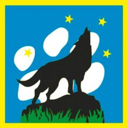

La manada
7 a 11 años
La Manada es un espacio privilegiado, una atmósfera especial, donde Lobatos y Lobeznas son
parte de una Familia Feliz.
Esta atmósfera especial es también un espacio educativo donde se generan estilos de vida; es
un espacio de ensayo de la futura vida social, que propicia las relaciones estrechas,
espontáneas, respetuosas y que prepara para la vida adulta. Es una atmósfera grata que
permite la interiorización de los valores y que entrega oportunidades de crecimiento
personal, desarrollando una conciencia crítica en sus integrantes.
La originalidad educativa del Movimiento Scout consiste en que el Lobato y Lobezna viven
esta atmósfera a la manera de un juego. Inmersos en ella, casi sin darse cuenta, van
simpatizando con un cierto estilo que poco a poco marcará sus jóvenes vidas, permitiéndoles
definir su personalidad y construir su propia escala de valores.